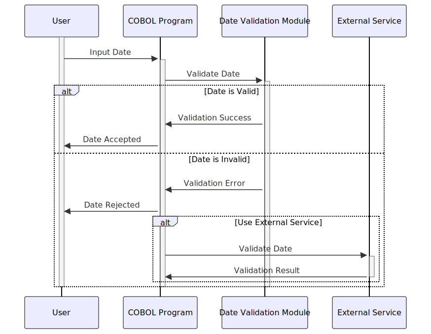

Gerado em: 1º de outubro de 2024
Aplicativo CardDemo - Módulo de Validação de Data
Descrição Resumida
Este módulo garante que as datas inseridas no sistema CardDemo sejam válidas e lógicas. Ele evita que datas incorretas causem problemas em outras partes do aplicativo, como cálculo de juros ou determinação da elegibilidade do cartão de crédito.
Histórias do Usuário
Como analista de dados, quero ter certeza de que todas as datas no sistema sejam precisas para que minhas análises e relatórios sejam baseados em dados confiáveis.
Épico Relacionado
9 - Utilitários do Sistema
Requisitos Funcionais
- O módulo deve validar as datas inseridas no formato AAAAMMDD.
- Deve verificar se o ano está dentro de um século razoável (19xx ou 20xx).
- Deve verificar se o mês está entre 1 e 12.
- Deve garantir que o dia seja válido para o mês informado (por exemplo, não 31 de fevereiro).
- Deve lidar com anos bissextos corretamente, aceitando 29 de fevereiro apenas em anos bissextos.
- Deve impedir que datas de nascimento futuras sejam inseridas.
- Deve ter a opção de usar um serviço externo (
CSUTLDTC) para validação adicional de data, se necessário.
Requisitos Não Funcionais
- O módulo deve ser confiável e preciso na validação de datas.
- Deve ser eficiente e não impactar negativamente o desempenho do aplicativo CardDemo.
- O código deve ser bem documentado e sustentável.
Critérios de Aceitação
- O módulo deve validar com sucesso datas válidas e rejeitar datas inválidas com base nas regras definidas.
- O módulo deve fornecer mensagens de erro claras quando a validação falhar, indicando o problema específico com a data.
- O módulo deve integrar-se perfeitamente com outras partes do aplicativo CardDemo que exigem validação de data.
Melhorias de Código
- Implementar um mecanismo centralizado de tratamento de erros para fornecer mensagens de erro consistentes e amigáveis.
- Adicionar comentários mais detalhados ao código para melhorar a legibilidade e a manutenção.
- Explorar técnicas de otimização de desempenho, como o uso de pesquisa binária para verificações de intervalo de datas, se necessário.
Melhorias de Segurança
- Garantir que o acesso ao módulo de validação de data e seus dados subjacentes seja restrito apenas ao pessoal autorizado.
- Desinfetar todas as entradas para o módulo para evitar vulnerabilidades como injeção de SQL.
Diagrama Conceitual

–Made by “Smart Engineering” (by Compass.UOL)–